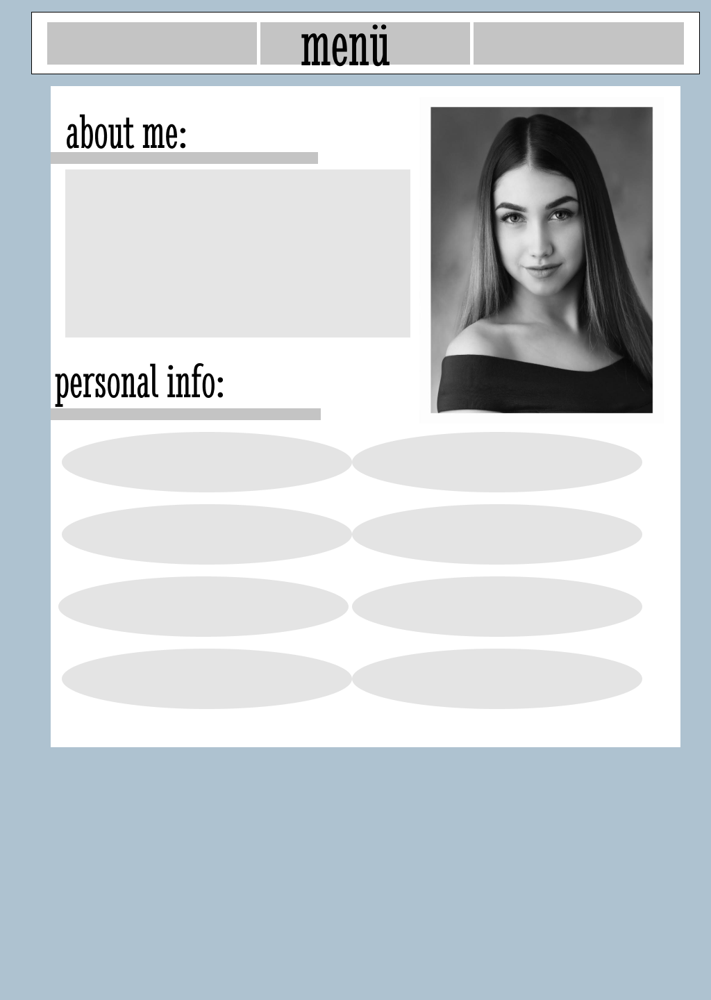
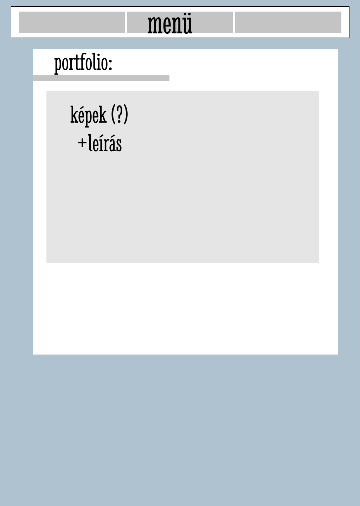
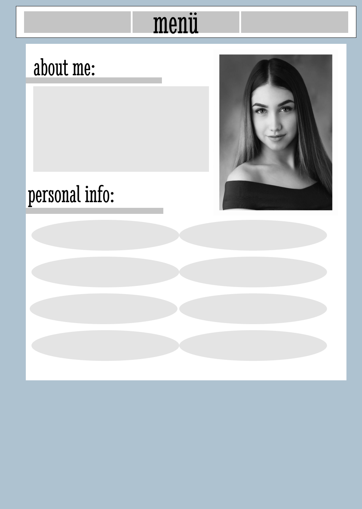
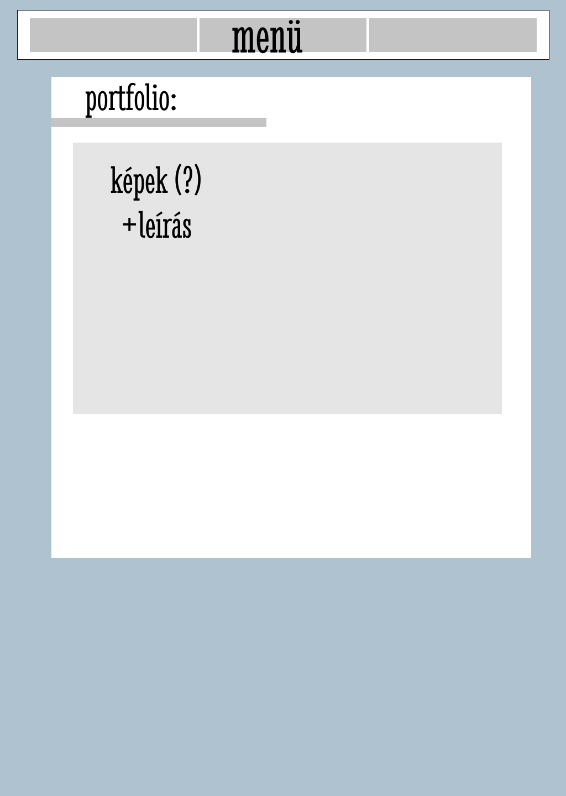

Az eredeti tervek:
 



Nehézségek/Változások a feladatban:
Több változtatás is történt az eredeti terven, mivel néhány dolog nehezebbnek bizonyult számomra. Eltervezni egyszerűbb volt, mint megalkotni, de erre számíthattam végül is ,mint kezdő, aki csak most először foglalkozik ilyesmivel az órák keretein kívül.
Ilyenek páldául a "Személyes információk" alatti szövegbuborékok/szöveg részek, amik eredetileg ellipszisek lettek volna, de a geometriai formák beszúrva nem voltak használhatóak, ráadásul nem is tetszettek.
A portfólió részben, a "Nappali" képre kattintva beszúrtam +1 oldalt(linket), ha esetleg a látogató, vagy potenciális érdeklődő, több munkámat akarná megnézni az adott témán belül. Ezt úgy képzelném el, hogy az összes helységhez kapcsolódóan lenne egy oldal, viszont idő hiányában sajnos csak egy példát sikerült elkészítenem, hogy így szemléltessem az elképzelésemet. Szintén a portfólió részben, a képek elhelyezésével akadtak problémáim, mert akárhogy rendeztem, nagy üres részek keletkeztek, amiket nem szerettem volna, ezért a képek méretezésével és elrendezésével próbáltam szebbé tenni, kitölteni a teret. Ezeket emelném ki elsősorban, amik a nagyobb nehézségek voltak számomra, viszont a többi apró változás, mint például a színek, azok maximum a kinézet miatt időközben alakultak át. Az alap színskálánál azonban megmaradtam, a kiemelések miatt adtam hozzá többféle árnyalatot a látvány kedvéért.
Néhány design elem szintén gondot okozott, ami alatt például a címek alatti speciálisabb aláhúzást értem, ezt nem sikerült a valóságban kivitelezni. Próbáltam itt is a geometriai formákat alkalmazni, de túl nagy helykihagyás lett volna a szöveg és az alakzat között. Végül pedig, a "contact" résznél csak a facebook-os elérhetőségem helyeztem el, mert az e-mail címnél nem tudtam pontosan hogyan lehet beszúrni azt, hogy a felhasználónak megnyissa a saját erre használt alkalmazását, esetleg egy új lapot és automatikusan az én e-mail címem jelenlen meg az üzenetküldési felületen.
Összegzésképp, nagyon élveztem a feladatot még a nehézségek ellenére is, szívesen kerestem utána és használtam az ajánlott oldalakat, programokat, majd alkalmaztam azokat vegyítve az eddig tanultakkal.
Felhasznált források:
https://www.pinterest.com"
https://www.w3schools.com/default.asp
Szánthó Eszter Luca
2020.11.26.